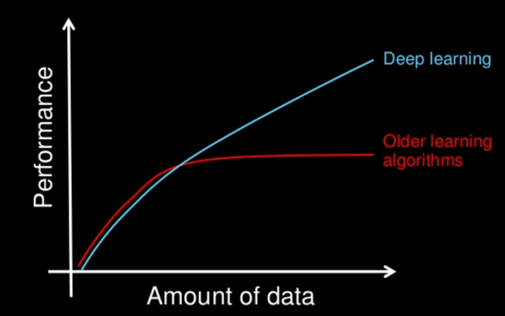

Esta parte del aprendizaje automático es la que utiliza las redes neuronales para procesar la información. A través de los diferentes modos de aprendizaje (supervisado, no supervisado y reforzado).
Las redes neuronales profundas son capaces de niveles asombrosos de poder de representación que resultan en una precisión avanzada en áreas tales como visión artificial, reconocimiento de voz, procesamiento de lenguaje natural y varios dominios de análisis de datos. Las redes profundas requieren grandes cantidades de computación para entrenar. Con algo de apoyo de las nuevas tecnologías (especialmente de intel) una carga de trabajo que anteriormente requería días ahora se puede realizar en cuestión de horas.
El aprendizaje profundo no es fácil de aplicar y es mucho mas lento, require de mucho mas poder de procesamiento. Pero al alcanzar un nivel mas avanzado (cuanto mas aprende) es mas efectivo e incluso mas rápido que los otros métodos.
